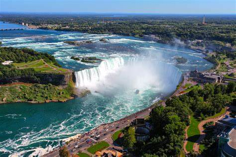
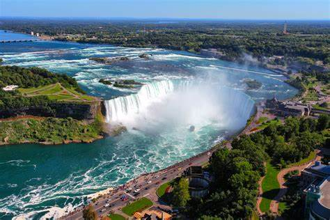

Yellowstone National Park


Geographical Location: North America
Yellowstone was the first national park in the U.S. and is also widely held to be the first national park in the world. The park is known for its wildlife and its many geothermal features, especially the Old Faithful geyser, one of its most popular.
Hundreds of species of mammals, birds, fish, reptiles, and amphibians have been documented, including several that are either endangered or threatened. The vast forests and grasslands also include unique species of plants.
Photo Gallery

Mammoth Hot Springs has a number of actively forming Travertine terraces.

The drive to Lamar Valley requires some dangerous roads. But the result is amazing sunset views.
The multicolored layers get their hues from different species of bacteria living in the cooler water around the spring.
The buffalo were so common along the roads in Yellowstone that our mantra became "If it ain't licking the car, we aren't stopping."

If you can handle the odor, the Yellowstone Sulphur Springs is a great place to hike.
Niagara Falls
 

Geographical Location: North America
Niagara Falls is located on the border between Canada and the United States. Connecting Lake Erie and Lake Ontario, Niagara Falls has the highest flow rate of any waterfall in North America.
Niagara Falls draws in thousands of visitors every year, and for good reason. As such, there are numerous things that you can see while you visit the falls, and it is very easy to make a full trip out of seeing this wonderful sight.
Photo Gallery

The ‘Horseshoe’

A rainbow in Niagara Falls

A colorful view of Niagara Falls

A distant look at Niagara Falls
Boulder Colorado


Geographical Location: North America
Boulder, Colorado is where the Buffalo Roam. It is home to my Alma Mater, the University of Colorado! There are many hiking locations near the city center, most notably Chautauqua Park.
Boulder, Colorado is a small city of about 104,000 people, about a quarter of which are students that attend the University of Colorado. They city is a vibrant start-up hub that is a center for technology and innovation much like Ann Arbor is.
Photo Gallery

Campus During Winter

Summer Time Flatirons

Pearl Street Mall

Varsity Pond

Winter Flatirons